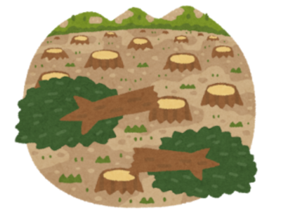
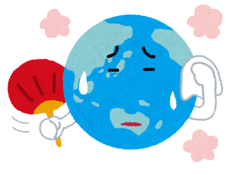
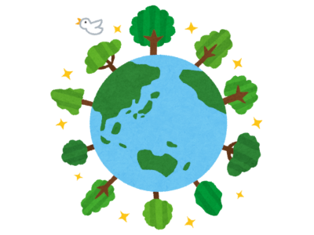

このサイトは気候変動や地球温暖化に関するボランティアに参加している人またはボランティア活動に興味がある人が交流する場を目的としています。
「ボランティア活動をする人たちのコミュニティがあるといいかもしれない」という目的でこのホームページが誕生しました。「仲間との交流」では地球環境保護のために行われているボランティア活動に参加する人たちのコミュニティ構築を図っています。

私たちは探求学習で自然環境の破壊について調べました。
自然環境の破壊とは森林を伐採することにより大気中の温室効果ガスを吸収することができにくくなります。それにより台風が多く発生するなどの気候変動が発生しています。
また、森林伐採はその環境に暮らす生物たちの住処をなくし生物多様性を減少させます。

「気候変動」とは大気の平均状態となる気候が移り変わることを意味している言葉です。気候変動は気候にかかわる地球全体のシステムの結果として生じているものなので、すぐに変動を止めることはできません。
気候が変動する理由には自然的な問題と人為的な問題があります
・自然的な問題
地球の気候は太陽に左右されますがそのほかにも大気自身の変動や海洋の変動、火山の噴火により増加した微粒子などがあります。
・人為的な問題
おもに温室効果ガスの増加や森林破壊があります。 温室効果ガスとして有名なものは二酸化炭素であり、化石燃料の使用により発生します。
温室効果ガスが増加すると太陽から発せられる紫外線が地球表面で熱として大気中に蓄積されます。森林破壊の主な原因は紙製品の需要が増加し過剰に伐採することで自然の回復力を上回り森林が減少していくことです。

「生物多様性」とは人間以外の動物や植物、昆虫などいろいろな生き物同士がつながりあっていることを言います。ですが、現在人間の活動の影響で1年間に4万種もの生き物が絶滅しているといわれています。
生物多様性の減少は私たちの衣・食・住だけでなく、きれいな空気や水、薬の原料に影響し様々な生態系サービスが受けられなくなります。私たちは日々の生活で様々な生態系サービスを受けていることを意識しなければいけません。
生物多様性を守るためにできること
・食べ残しを減らし食品廃棄物を減らす
・自然体験をすることで自然をより身近に感じてもらう